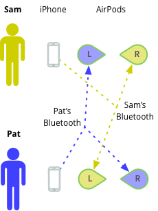

I came across a tweet from Louis Anslow featuring a TikTok video from @_leilanaa:
Kids are swapping AirPods in class then using text to speech to ‚Äòtalk‚Äô without talking ü§©ü§©ü§© pic.twitter.com/moLxK1rzbv
— Louis Anslow (@LouisAnslow) January 21, 2020
In this video, two people with iPhones and wireless AirPods swap one of the two left/right AirPods with each other, and use a text-to-speech app to “speak” to the other person. I’m going to break-down how this works and why it might be utilized.
First, the normal state:
Sam & Pat both have iPhones and a set of left & right AirPods. In this diagram each of their iPhones are connect to each of their own AirPods over Bluetooth.
The Swap:

Sam & Pat have swapped their left AirPods. In this diagram each of their iPhones are still connected to each of their own AirPods over Bluetooth, but the left AirPod is being worn by the other person, so Sam would hear Pat’s left audio channel, and Pat would hear Sam’s left audio channel. The right AirPod remains as it was in the normal diagram.
The video goes on to show the use of an application like Google Translate performing a Text to Speech operation on each phone.
This works as follows:
The advantages of this method are:
A possible shortcoming of this method is the visual reveal of the phone itself. If you’re trying to have a discrete exchange with someone in and environment where outside communication is denied, you’ve signaled your intention to communicate by taking out your phone. If you’re in a library where noise is denied, you’ve got the right solution. If you’re in a classroom or conference room, you might stand out. This is a very clever technique and I applaud whoever came up with it. It could easily be replicated to non-Apple devices.